Sinopse
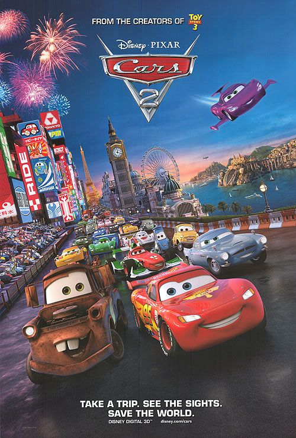
Após ganhar a Copa Pistão pela quarta vez, Relâmpago McQueen (Owen Wilson) e sua equipe retornam a Radiator Springs para descansar. Lá ele reencontra Mate (Larry the Cable Guy), seu maior amigo, que aguarda ansioso pelo retorno. Pouco após sua chegada Relâmpago toma conhecimento do Grand Prix Mundial, evento organizado pelo empresário Miles Eixodarroda (Eddie Izzard) onde todos os competidores usarão Alinol, um combustível alternativo. Após ser provocado em um programa de TV por Francesco Bernouilli (John Turturro), um adversário, Relâmpago resolve também competir. Ele decide levar Mate para acompanhá-lo nas corridas, mas logo ele é confundido com um espião americano. Desta forma Mate precisa lidar com Finn McMíssil (Michael Caine) e Holly Caixadibrita (Emily Mortimer), que tentam descobrir qual é o plano do professor Z (Thomas Kretschmann) e seu enigmático chefe para a competição.
Trailer
Elenco de voz original
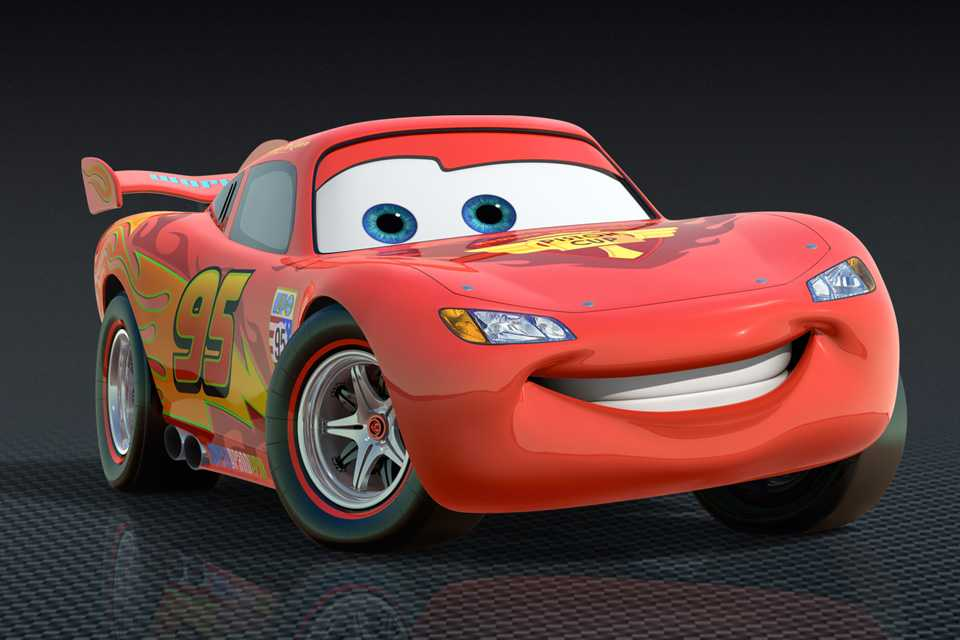
Owen Wilson
Relâmpago McQueen
O astro das pistas que participa do Grande Prêmio Mundial.
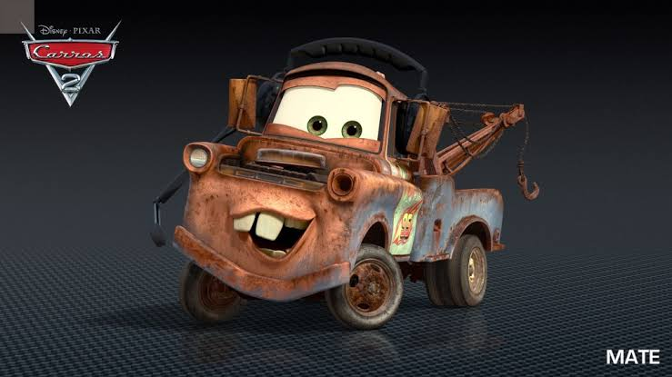
>Larry the Cable Guy
Mate
O melhor amigo de McQueen que acaba envolvido em uma aventura de espionagem.
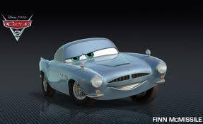
Michael Caine
Finn McMíssil
Um experiente agente secreto britânico que investiga uma ameaça internacional.
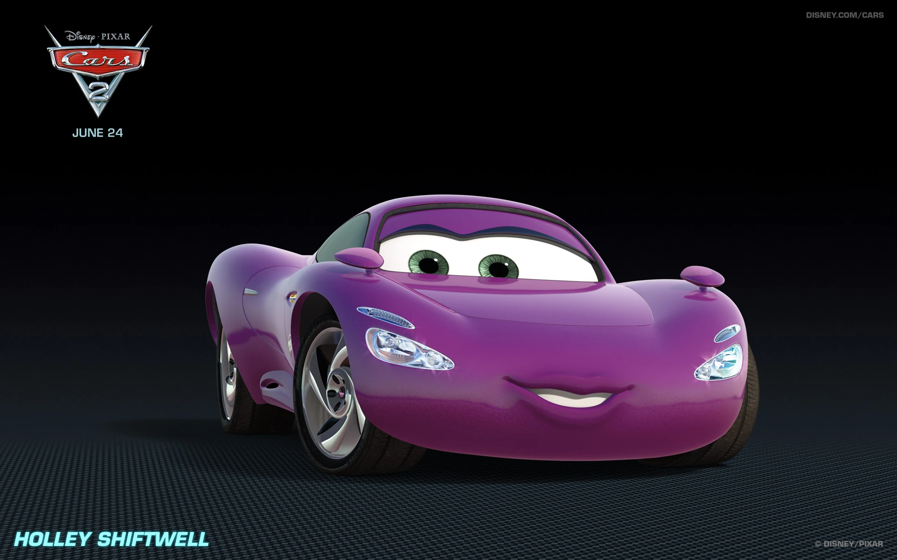
Emily Mortimer
Holley Caixadibrita
Uma agente de campo que utiliza tecnologia para ajudar na missão.
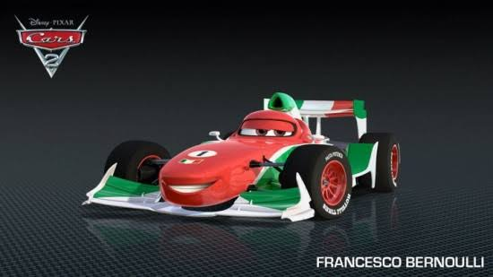
John Turturro
Francesco Bernoulli
O veloz e arrogante piloto italiano que compete contra McQueen.
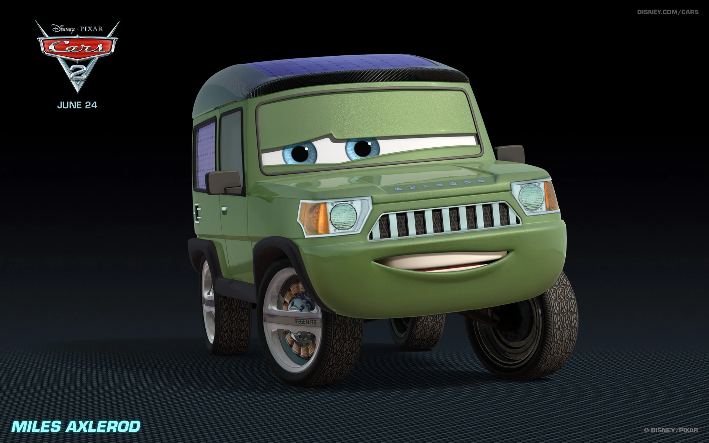
Eddie Izzard
Sir Miles Eixoderroda
Um ex-magnata do petróleo ligado ao desenvolvimento do combustível Allinol.
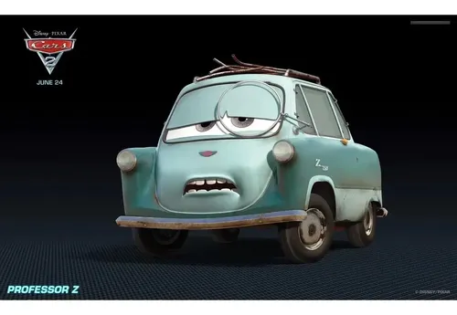
Thomas Kretschmann
Professor Z
Um cientista envolvido no plano para sabotar o Grande Prêmio Mundial.
Galeria
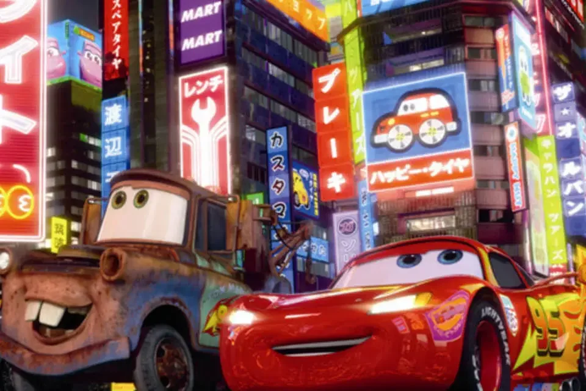
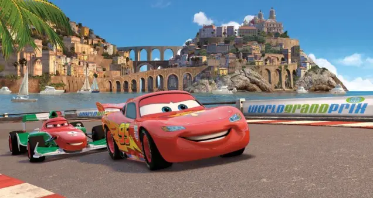
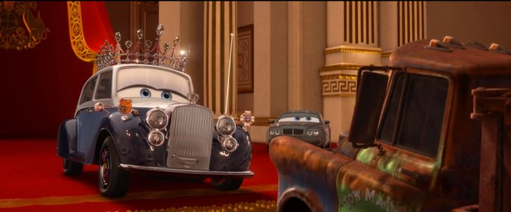
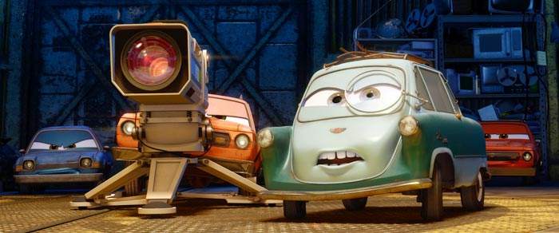
Curiosidades
- Inspirado em filmes de espionagem, como 007.
- McQueen e Mate viajam pelo mundo, passando por Japão, Itália e Inglaterra
- Mate vira um “espião” por acidente e acaba sendo essencial para solucionar o mistério.
- Francesco Bernoulli, rival de McQueen, é inspirado em carros de Fórmula 1.
- É bem diferente do primeiro filme, misturando corridas, ação e espionagem.
- O filme ganhou um jogo oficial, lançado em 2011, permitindo controlar vários personagens em corridas e missões.